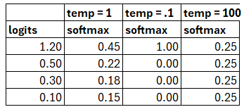

Introduction
Three Architectures
There are generally three architectures for Large Language models. They can be build out in many kinds of neural networks such as LSTM / RNN, Transformer, state space models (recent architectures). Most popular network type today is Transformers. In transformer, each input token is processed by a column of transformer layers. Each of these layers is composed of a series of different kinds of subnetworks.
Decoder
Input: series of tokens
Output: iterative generation of an output token one at a time. distribution over token that we can sample from
Sequence: Left to Right, predicts the next word only from prior words
Type: Generative model (Causal / Autoregressive)
Usage: Generate novel output tokens
GPT, Claude, Llama, Mistral
Encoder
Input: sequence of tokens
Output: Vector representation of each tokens
Sequence: Left to Right; Right to Left
Type: Masked Language Models, Non Generative models (non-Autoregressive)
Usage: used to created classifiers such as input is a text and output is a label (sentiment analysis or topic), Finetuning the model by training them on supervised data.
BERT, RoBERTA
Encoder-Decoder
Input: series of tokens
Output: series of tokens
Different than the decoder only model as it has much looser relationship between input tokens and output tokens. The output tokens might be very different tokens or longer / shorter than input tokens
Usage: Machine Translation, Speech Recognition
Decoder Models - Intuition
Using the decoder model as a sentiment analysis:Input: The sentiment of the sentence "The market crashed" is:P("positive" | "Input: The sentiment of the sentence "The market crashed" is:")P("negative" | "Input: The sentiment of the sentence "The market crashed" is:")
Using the decoder model as a Question Answer: Q: Who wrote the book "The Great Gatsby?" A: P(w | "Q: Who wrote the book "The Great Gatsby?" A:")
We look at the token $w$ and find F. as the highest probability token. P(w | "Q: Who wrote the book "The Great Gatsby?" A: F.")
We look at the token $w$ and find Scott as the highest probability token. P(w | "Q: Who wrote the book "The Great Gatsby?" A: Scott")
We look at the token $w$ and find Fitzgerald as the highest probability token.
Using the decoder model for Translation:Translate the following sentence to Chinese: "Do the dishes"
Decoder Models - Prompting
The language model are specially trained to answer questions and follow instructions. This extra training is called instruction-tuning. We take a base language model that has been trained to predict words and train it on a special dataset of instructions together with the appropriate response to each. Then when promoted, it can generate useful response. The process of finding effective prompts for a task is known as prompt engineering.
Including some labeled examples in a prompt can improve performance. These examples are known as demonstrations. The task of prompting with examples is called few-shot prompting.
Choosing demonstrations by using an optimizer like DSPy increases task performance of the prompt. More examples give diminishing returns and too many examples may overfit the model. Demonstrations help to generate the task and format. Even incorrect answers for a particular demonstration may help.
The weight of the model is not updated through promoting. We change the context and activations in the network. This type of learning is called context learning where we do not update the model's parameters using gradient-based updates but improve the model performance or reduce some loss.
System Prompt is a single text prompt that is the first instruction to the language model which defines the task or role for the Language model. It sets the overall tone and context. It is prepended to any user text. <system> You are a helpful and knowledgeable assistant. Answer concisely and correctly <user>What is the capital of France?
User prompts are appended to the system prompts.
Token Generation and Sampling
The transformer (or decoder) generates the raw real valued numbers called logits for each token in
the vocabulary. The score vector is then normalized using softmax to get a probability distribution.y = softmax(u)
Decoding is the process of choosing the token based on the model's probability distribution.
The simplest way is to choose the token with maximum probability. This is known as Greedy decoding. Greedy decoding is quite deterministic and always result in generating the same token for a given context. An extension to greedy decoding is beam search.
To introduce diversity in the generated text, many prefer to use random sampling.
i <- 1
w_i ~ p(w)
while w_i != EOS
i <- i + 1
w_i ~ p(w_i | w_<i)
But greedy decoding is too boring and random sampling is too random.
Temperature Sampling
This sampling reshapes the probability distribution to increase the probability of the high probability tokens and decrease the probability of the low probability tokens.
$ \tau \epsilon (0,1)$
$ y = softmax(u/\tau)$
When $\tau = 1$, we are using normal probability.
When $\tau$ is low, say 0.1, the ones with higher probability has higher logit value and the probability of those reach 1 and lower ones reach 0. This is same as greedy sampling.
When $\tau$ is high, say 10 or 100, the sampling becomes uniform.

top-k
top-p
Training Sequence
- Pretraining
Uses pretraining data
Sets the parameters of the model - Trained by error backpropagation with gradient descent using Cross Entropy loss function.
$ L_{CE} = - \sum_{w\epsilon V} y_t[w] log{\hat{y_t}}[w] $
$y_t$ is the one-hot vector for the next word.
$\hat{y_t}$ is the probability distribution output of the model.
Since $y_t$ is the one-hot vector for the next word, we an simply the cross-entropy loss as:
$L_{CE}(\hat{y_t}, y_t) = -log \hat{y_t}[w_{t+1}]$
Note: We always give the model the correct history of the sequence to predict the next word and not the models output. This is called teacher forcing.
The loss for each batch is the average cross-entropy over the entire sequence of negative log probabilities. The weights in the network are then adjusted to minimize this loss over the batch via gradient descent.
- Instruction Tuning
Instruction Data such as Label sentiment, Summarize, Translate
- Preference Alignment
Preference data on various response from the LM